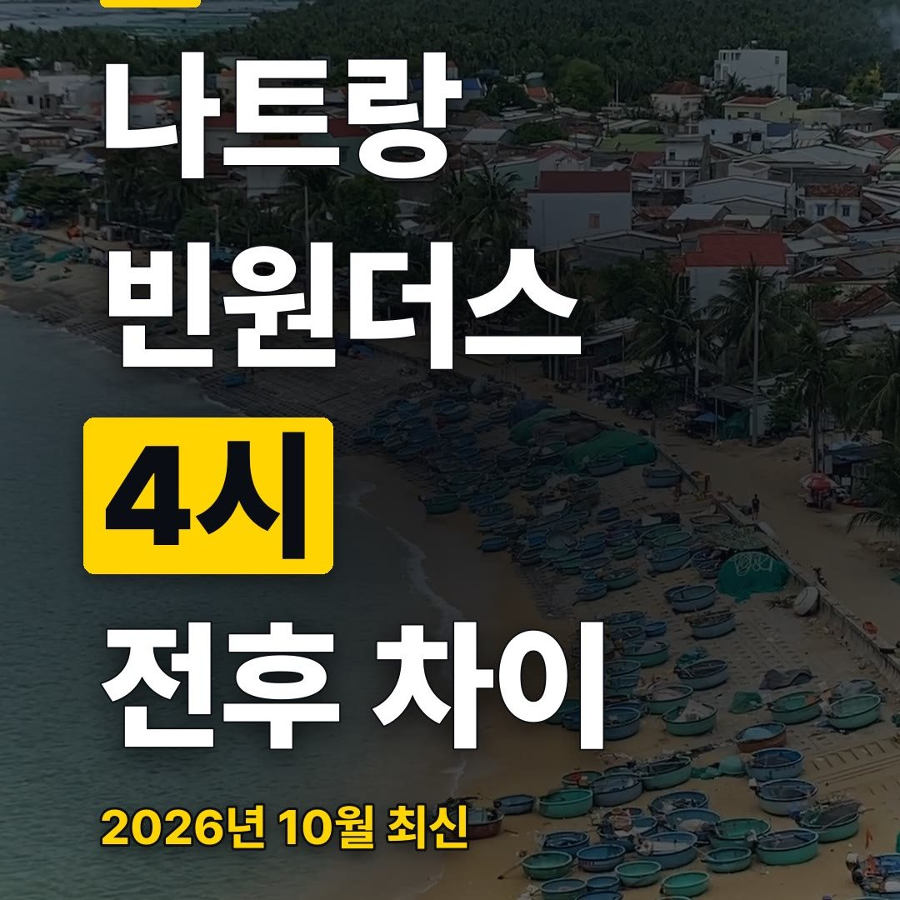
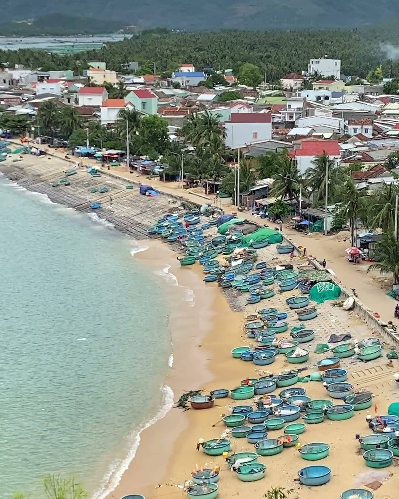
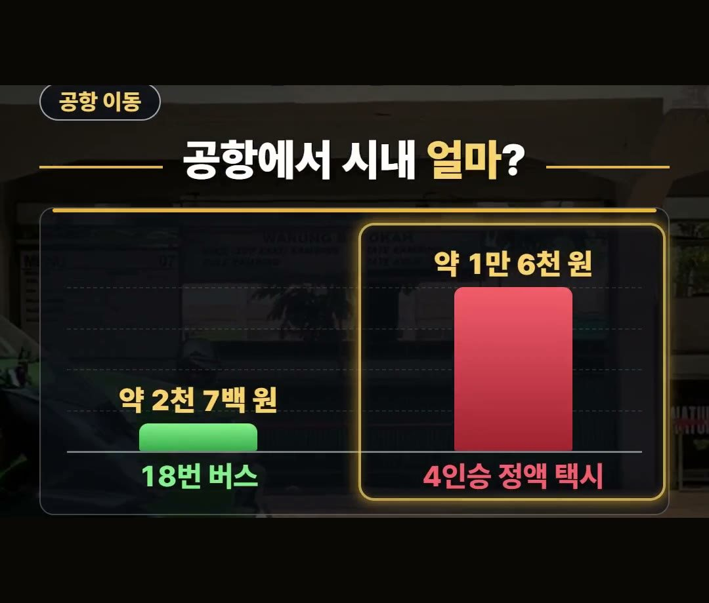
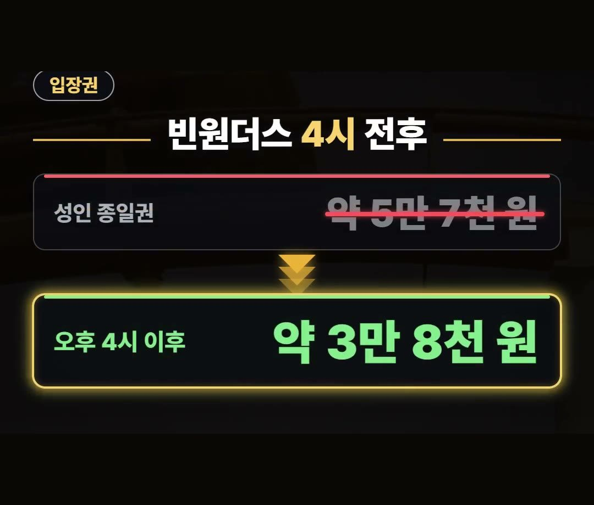
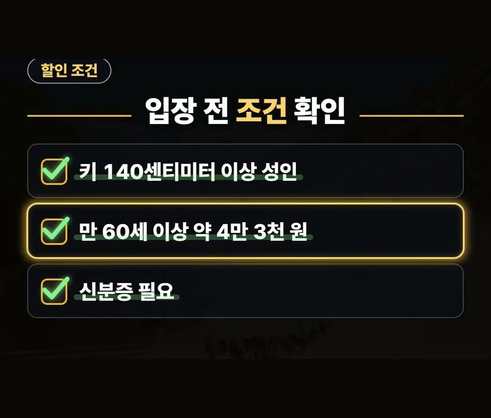
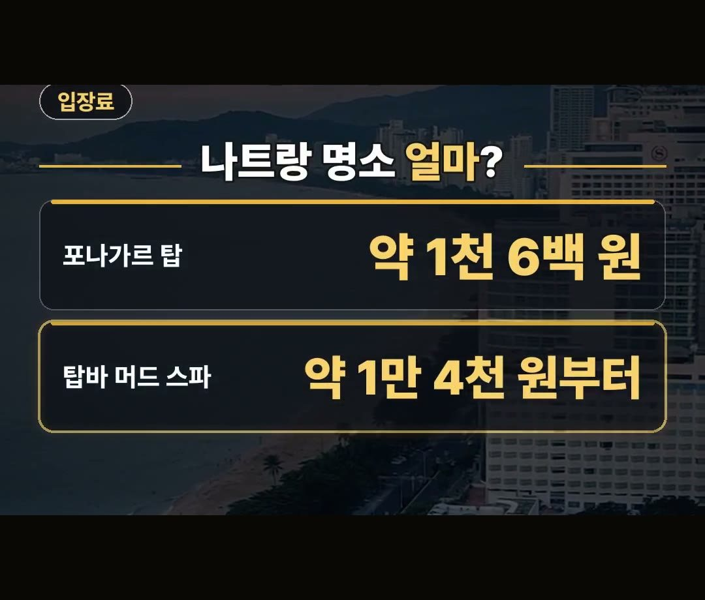

나트랑 자유여행, 공항 버스·택시·빈원더스 뭐가 더 쌀까
※ 이 글에는 제휴 링크가 포함되어 있으며, 링크를 통해 예약·구매하시면 일정 수수료를 받을 수 있습니다. (가격은 같습니다)
※ 이 포스팅은 쿠팡 파트너스 활동의 일환으로, 이에 따른 일정액의 수수료를 제공받습니다.
깜라인 공항에 막 내려 시내까지 무엇을 타야 할지, 빈원더스 표는 언제 끊어야 할지 머릿속이 복잡한 상황을 떠올려 보세요.
이 글에서는 2026년 10월 기준 나트랑 자유여행 요금을 공항 이동, 빈원더스 입장권, 명소 입장료 순서로 정리했어요.
같은 곳도 언제 어떻게 가느냐에 따라 값이 갈리니, 그 기준으로 하나씩 살펴볼게요.
돈 아끼는 연구소 아낌 소장이에요.
2026년 10월 기준 빈원더스 성인 종일권은 약 5만 7천 원, 오후 4시 이후 입장권은 약 3만 8천 원으로 정리해 봤어요.
다만 4시 할인은 키 140센티미터 이상이 기준이니 입장 전에 꼭 기억하세요! 😊


나트랑 자유여행 경비, 공항에서 시내까지 얼마?
나트랑 자유여행 경비를 짤 때 여행 첫날 바로 쓰게 되는 돈이 공항에서 시내로 가는 비용이에요.
깜라인 공항에서 시내로 가는 방법 중 18번 버스와 택시를 비교해 봤어요.

- 18번 버스: 약 2천 7백 원 (50분~60분)
- 택시: 약 1만 4천 원~1만 9천 원 선
요금만 놓고 보면 18번 버스가 낮고, 택시는 그보다 높아요.
버스는 시내까지 50분에서 60분이 걸린다고 하니, 도착 시간대와 함께 움직이는 인원을 떠올리며 고르시면 됩니다.
택시는 차 종류와 시간대에 따라 요금 폭이 있으니 타기 전에 확인해 보세요.
빈원더스 종일권과 오후 4시 이후 입장권
나트랑 여행에서 입장권 비용이 크게 나뉘는 곳이 빈원더스예요.
같은 성인 입장권인데도 몇 시에 들어가느냐에 따라 요금이 달라져요.

- 성인 종일권: 약 5만 7천 원
- 오후 4시 이후 입장권: 약 3만 8천 원
종일권과 오후 4시 이후 입장권은 숫자로 보면 차이가 분명해요.
그래서 일정을 짤 때 빈원더스를 몇 시에 들어갈지 먼저 정해 두면 비용을 비교하기가 쉬워집니다.
위 금액은 모두 2026년 10월 기준이라는 점도 함께 기억해 주세요.
입장 전 조건부터 확인하세요
오후 4시 이후 입장권만 보고 계획을 세웠다가 조건이 맞지 않으면 곤란하겠죠.
4시 할인에는 조건이 붙어 있어서 입장 전에 아래 항목을 확인해 두셔야 해요.

- 4시 할인: 키 140센티미터 이상 기준
- 만 60세 이상 종일권: 약 4만 4천 원
- 신분증 필요
만 60세 이상이라면 종일권이 약 4만 4천 원이고, 이때는 신분증이 필요해요.
가족과 함께 가신다면 누가 어느 조건에 해당하는지 미리 나눠 보시는 걸 권해요.
나트랑 자유여행 코스에 넣을 명소 입장료
나트랑 자유여행 코스를 짤 때 포나가르 탑도 후보에 올려 두세요.
참파 왕국의 옛 사원이에요.

- 포나가르 탑 입장료: 약 1천 6백 원
입장료 부담이 거의 없어서 일정 사이에 넣기 좋아요.
그리고 현지에서 쓸 데이터는 이심으로 미리 준비해 두시면 좋아요.
정리
- 2026년 10월 기준 깜라인 공항에서 시내까지 18번 버스는 약 2천 7백 원(50분~60분), 택시는 약 1만 4천 원~1만 9천 원 선이에요.
- 빈원더스 종일권은 약 5만 7천 원, 오후 4시 이후 입장권은 약 3만 8천 원이고, 4시 할인은 키 140센티미터 이상이 기준이에요.
- 포나가르 탑 입장료는 약 1천 6백 원이에요.
예약 링크는 아래에 모아 두었어요.
📘 무료 여행 가이드 전자책 모음 보기 (오사카 · 후쿠오카 · 타이베이 · 도쿄 · 일본겨울) ›
📌 2026년 10월 기준 정보예요. 가격은 환율·시기에 따라 달라질 수 있어요.
사진·영상: Pexels (HUỲNH DŨNG, Hoang NC, Oleksii Mamchenko, Peggy Anke, Ricky Esquivel, benedicto 13)